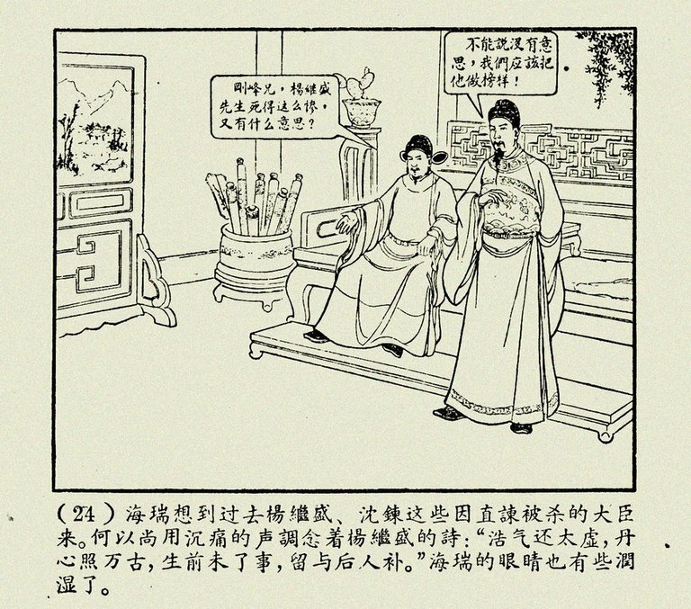

在去年2月份加盟酒类连锁行业之前
C先生是一个广告人
之所以从高薪的广告行业
跳到尚不算成熟的酒类连锁行业，是因为他认为这个行业“有搞头”。
“这个行业还没有出现大商。”C先生所说的“大商”是指大的零售商。
零售商如果集中，将改变产业链的竞争格局。家电行业中，以前的厂家利润高而商家利润低，现在则相反。医药行业中，虽然药店连锁还只是区域性地集中，但也瓜分到不少利润——一般的品牌，如果零售卖100元，进店最多50元。“现在最好的商铺位置，就是药店、银行、肯德基。”
与家电、医药等行业相比，酒类行业的零售商规模都比较小，在行业中的地位也不高。与行业龙头企业两三百亿元的销量规模相比，最大酒类连锁零售商一年也就10亿元左右的营业收入;白酒企业毛利30%以上很正常，而最优秀的酒类连锁零售商综合毛利最高只能在25%左右(不含香烟)。
与家电、医药等行业相比，酒类行业的零售商规模都比较小，在行业中的地位也不高。与行业龙头企业两三百亿元的销量规模相比，最大酒类连锁零售商一年也就10亿元左右的营业收入;白酒企业毛利30%以上很正常，而最优秀的酒类连锁零售商综合毛利最高只能在25%左右(不含香烟)。
“这个行业在进化中。”这是C先生进入行业之前的判断。
C先生受命负责桐徽酒汇时，该连锁店在安徽省会合肥市已经有了30家门店。在C先生的设想中，一个省会城市，白酒的市场容量大概有30亿~40亿元，假设其中仅有三分之一是通过门店零售出去的，那也是10亿元的市场;通过30家连锁门店在这10亿中占10%的份额，那也有1亿元;分到30家门店，每家完成300万元的销售即可。也就是说，一家门店一天只要卖出1万元的酒即可。

“再怎么差，一天卖1万元总可以吧。”C先生觉得，只要店面足够多，形成一定的品牌影响力，连锁门店抢一些小烟酒店的生意是没问题的。
所以，他的思路是，开新店，通过门店占领市场;做促销，吸引客流。
不过，事情并没有想象中的那么简单。
“我的价格再便宜，也便宜不过旁边的夫妻型烟酒店。”价格是个硬伤，只能用正规、保真的连锁形象来弥补价格方面的不足。
因此，他用各种促销吸引客流过来，让顾客体验到店面的大气、规范。“逮到机会就促销。”去年他们几乎每个月都做一次促销活动。父亲节，端午节……找到机会就促销;送礼品，抽奖，啥花样都玩。
但效果却并不明显。酒类连锁店不像超市，其品类单一，购买的频次也不高，促销很难形成人气，只是对提升店面的知名度有一些帮助。
有客流，但却没有多少销量。原想着单店一天卖一万，结果一个月才卖三五万，毛利不到一万。再除掉房租、人员工资等成本，开新店就意味着亏损。
开新店就亏，促销也留不住客人。咋办?
半年之后，通过与同行学习与交流，C先生慢慢地琢磨出一些“秘诀”。
零售要盈利就两个方面，一是提高销售额，二是提高利润率。
销售额怎么提高?无非是增加客流量、下单率、及购买频次。
价格：转换参考坐标
其实，一个城市30家门店已经足够形成一定的品牌知名度，频繁的促销活动也能吸引一些客流。只是，顾客进店了却不下单。为什么?
“应该还是因为价格问题。”C先生这样分析。顾客很容易用旁边小烟酒店的价格拿来与桐徽酒汇的价格相比。“与路边烟酒店之类的价格杀手相比，价格上我们很难有优势。不过，我们可以改变顾客的参考坐标系，用我们的价格与卖场比较，这样就能显得我们比较便宜。”
以前，桐徽酒汇的每一款酒品的价格标签上有两种价格，一是“市场价”，一是“桐徽价”。实际上如果把小烟酒店的价格作为市场价，桐徽价是没有什么优势的。于是C先生重新设计了价格标签，在每款酒品上标注三种价格：“本地卖场价”、“桐徽价”及“会员价”。
“本地卖场价”的依据是当地的家乐福、沃尔玛的零售价格，“桐徽价”肯定能比“本地卖场价”便宜，而如果你加入会员了，还能享受到更多的优惠。
“让顾客进店感觉到我们这里装修和陈列都比卖场专业、正规，品项也比卖场多。”C先生介绍说，“但价格又比卖场便宜。”
其实很多消费者清楚，卖场的酒一般要比烟酒店要贵，但卖场的品项要比小烟酒店多一些;更重要的是卖场更正规，能够保证卖的都是真品。从这个意义上来说，桐徽酒汇其实抢的是卖场的销量。
将顾客的参考坐标由小烟酒店变为卖场，不但能体现出品类店的专业性，同时也解决了“价格更贵”的问题。
一旦消费者认为这里“更便宜”，下单购买便不再是问题。
“价格标签换掉之后，下单率有明显提高，每个月新注册会员的数量也比之前提高了30%左右。”C先生说。
抓住“忠诚大客户”
有了下单率，下一步便是如何提高顾客的购买频次。
“顾客以前是零散的，偶尔过来买而已。但如果忠诚度高了，只要买酒就到我这来，或者打个电话我给你送过去。”C先生发现，提高购买频次就是要让顾客更忠诚，把零售散客变成忠诚大客户。
为了留住客户，C先生想了不少招：“服务要学海底捞。”
只要顾客进店，店员就必须给他端茶倒水，除非只是买包烟就走。这已经成为门店的标准化服务之一。
进店的顾客，只要店长觉得会是潜在客户，不管是否买酒，都可以给他送点小礼品。比如纸抽，打火机，甚至一瓶酒都可以。
所有开车来的客户，买了酒之后，必须由店员端着放到车上，不可以让客户自己拿。这也是要求门店强制执行的标准化服务之一。
类似这样的服务细节还有不少。“我们甚至试过免费洗车，效果非常好。”不过可惜的是，在几家门店试点时，就被城管叫停，理由是影响周边环境。
“店面的销售都是这样的细节，没有什么战略性的东西。”C先生总结道。
对进店的顾客来说，酒总是要买的，无非是在哪里买的问题。看到这里装修、陈列都比较正规，服务又很热情，总会有机会在这里买一次试试。只要有了第一次，就会有第二次、第三次。
“老顾客多了，销售就稳定了，有了老顾客，我每个月肯定都是上涨的。顾客进得来，出不去，肯定只会越做越多。”